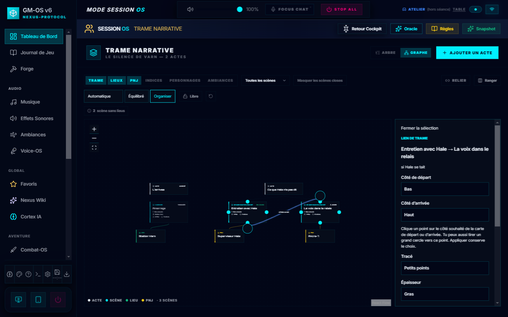
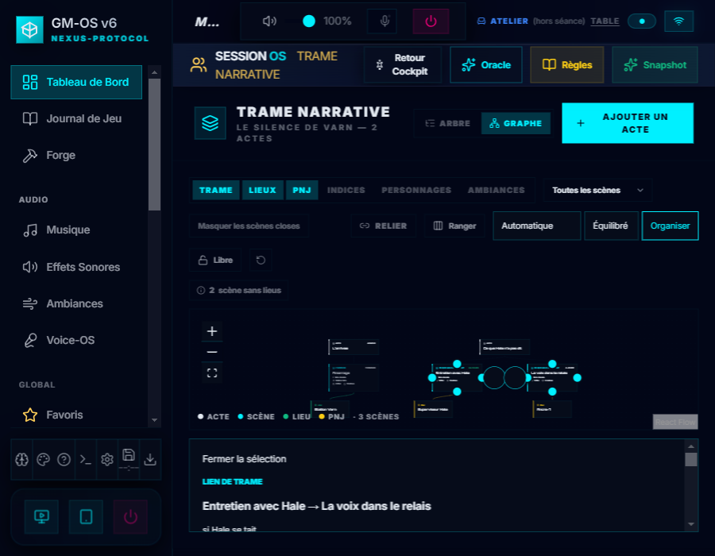

Déplacer une extrémité plus facilement
Dans Trame → Graphe, sélectionne le lien, puis clique un point sur le côté souhaité de sa carte de départ ou d'arrivée. Le panneau suit ton choix ; Appliquer le conserve. Entrée ou Espace sur un point focalisé fait le même geste.
Les grands cercles restent disponibles pour le glissement. Ils gardent leur taille à l'écran quand tu dézoomes ; les points ont une zone de clic élargie et attirent l'extrémité déposée près d'eux. Le lien sélectionné passe au premier plan.
Captures du 07/10/2026 sur une campagne fictive et un profil isolé. Réalisation · Contrôles · Galerie des cartes

1440 pixels — aperçu local, départ en bas et arrivée en haut.

900 pixels — inspecteur sous la toile, points et cercles accessibles.